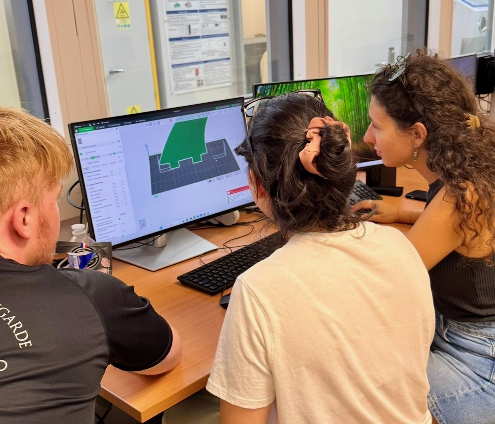

Design with the footprint in view
This project reframed a familiar sport object through the entire design chain: materials, manufacturing, use and end-of-life. Sessions with Koz explored mycelium surfboards and the practical meaning of responsible innovation.
Digital fabrication as a design language
Working in CATIA V5, teams created NACA-profile surf fins and moved them through a complete digital-fabrication workflow. Bambu Studio was used to prepare the print, discuss layer strategy and translate the CAD intent into a physical part. A separate sensor-board challenge widened the conversation from form to user feedback and product interaction.


Takeaway
Engineering for sustainability becomes meaningful when ecological choices survive contact with geometry, material behaviour and real manufacturing constraints. This course paired that perspective with hands-on CAD and prototype production.